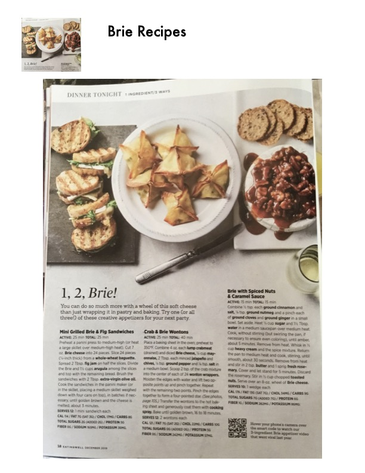

1, 2, Brie! (Three Creative Brie Appetizers)

Original cookbook page 34
Three creative appetizers featuring Brie cheese: Mini Grilled Brie & Fig Sandwiches, Crab & Brie Wontons, and Brie with Spiced Nuts & Caramel Sauce.
Prep: 15-25 minutes active • Cook: 15-40 minutes • Total: 15-40 minutes
Ingredients
- For Mini Grilled Brie & Fig Sandwiches: 7 oz Brie cheese, 1 baguette, 2 tbsp fig jam, 1½ cups arugula, 2 tbsp olive oil
- For Crab & Brie Wontons: 4 oz lump crabmeat, ¼ cup diced Brie, ¼ cup mayonnaise, 2 tbsp minced jalapeño, 2 tbsp chives, ¼ tsp pepper, ⅛ tsp salt, 24 wonton wrappers
- For Brie with Spiced Nuts: 1 tsp cinnamon, 1 tsp salt, ¼ tsp nutmeg, pinch cloves and ginger, 1 cup sugar, ⅓ cup + 1½ tbsp water, 1 cup heavy cream, 1½ tbsp butter, 1 sprig rosemary, ½-¾ cup chopped hazelnuts, 8-oz wheel Brie
Instructions
- Recipe 1 - Mini Grilled Brie & Fig Sandwiches: Cut Brie into 24 pieces, slice baguette into 24 pieces. Spread fig jam on half the slices, add Brie and arugula, top with remaining bread. Brush with oil and cook in panini press until golden, about 3 minutes.
- Recipe 2 - Crab & Brie Wontons: Combine crabmeat, diced Brie, mayo, jalapeño, chives, pepper, and salt. Place 2 tsp mixture in each wonton wrapper, seal into star shape. Spray with cooking spray and bake at 350°F for 16-18 minutes.
- Recipe 3 - Brie with Spiced Nuts: Combine spices in small bowl. Heat sugar and water to amber caramel. Whisk in cream and spices, cook until smooth. Stir in butter and rosemary, let stand 5 minutes. Remove rosemary, stir in nuts. Serve over Brie wheel.
Recipe #34 from collection